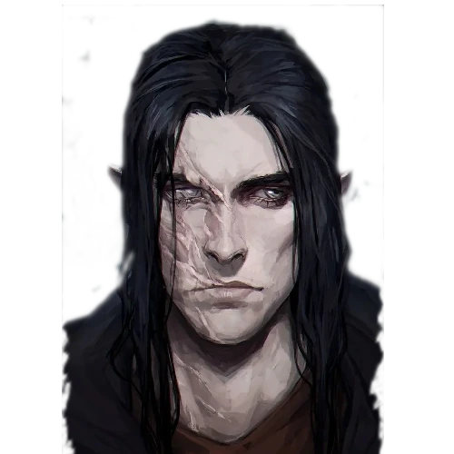

Sombras de Merrit
O Vale do Aço nunca teve tantos problemas quanto com a Guerra Rubra
Agora, depois de alguns pactos e acordos duvidosos com seres poderosos, suas almas estão para sempre seladas em um ciclo de servidão, mas isso não necessariamente é ruim, apenas é preciso saber manipular os outros de acordo

Gadris, a Sombria
Punida por seu povo, ela encontrou seu lugar dentre seus colegas de pacto, uma nova família no meio dos acordos

Coveiro, o Santo
No meio de toda a corrupção das terras, o Coveiro ainda consegue viver em luz e trazendo esperança para os seus colegas